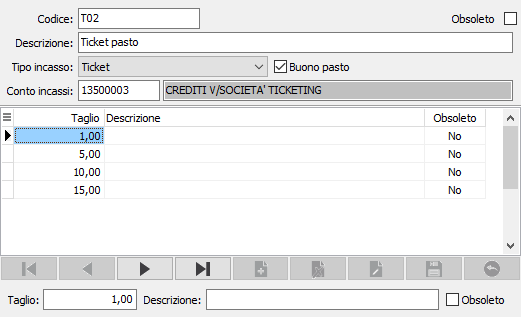

Tipologie di incasso
Tramite questa tabella è possibile codificare più tipologie di pagamento per ciascuna modalità di chiusura vendita (assegni, bancomat, carte di credito, ticket). Nel caso di ticket è possibile anche indicare i tagli (gli importi) del ticket e definire se si tratta di uno specifico buono pasto, spuntando la casella relativa, oppure di un ticket generico. E’ possibile, tramite questa tabella, parametrizzare il conto di incasso da utilizzare in fase di contabilizzazione, perchè se presente e non variato in chiusura delle vendita sarà utilizzato quello riportato sulla tipologia scelta.

Per ogni tipologia è previsto un codice ed una descrizione, è necessario specificare il tipo di incasso utilizzando l'apposita casella a discesa ed è possibile, ma non obbligatorio, indicare un sottoconto; per i tipi Ticket è necessario compilare la parte sottostante inserendo i vari tagli che saranno disponibili durante la movimentazione; ad ogni taglio è possibile associare una descrizione.